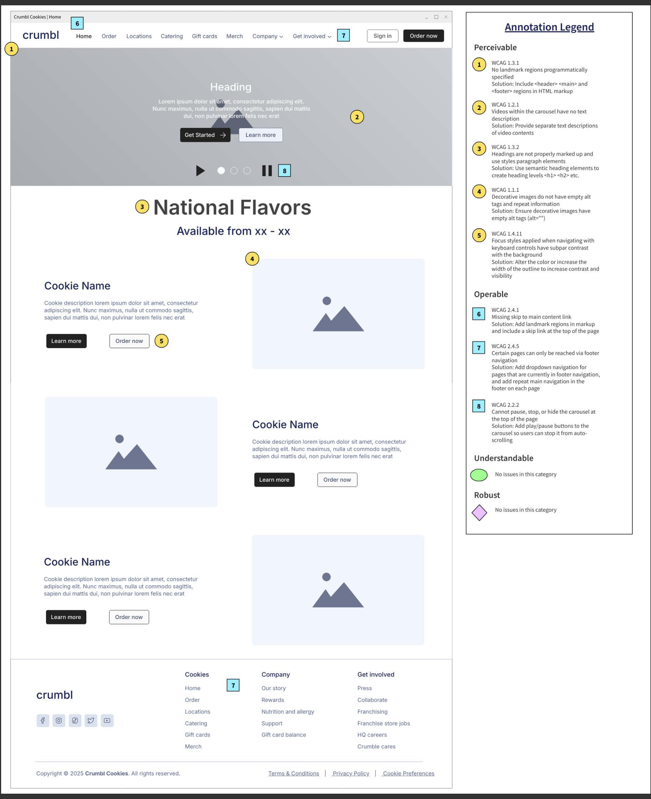
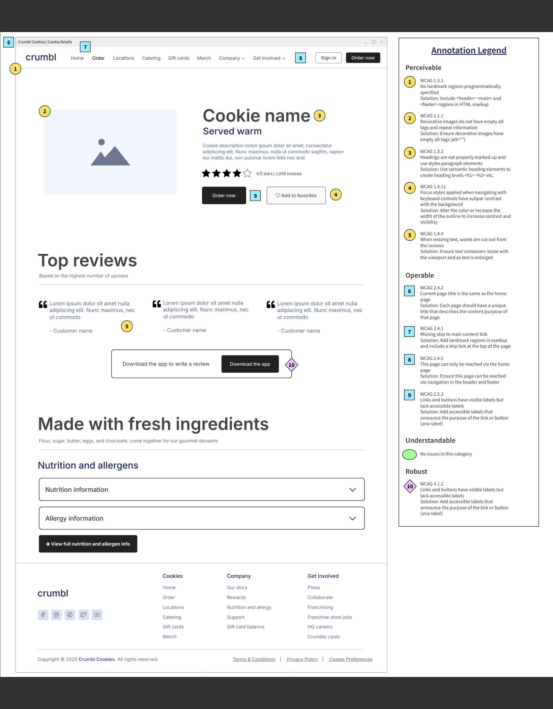
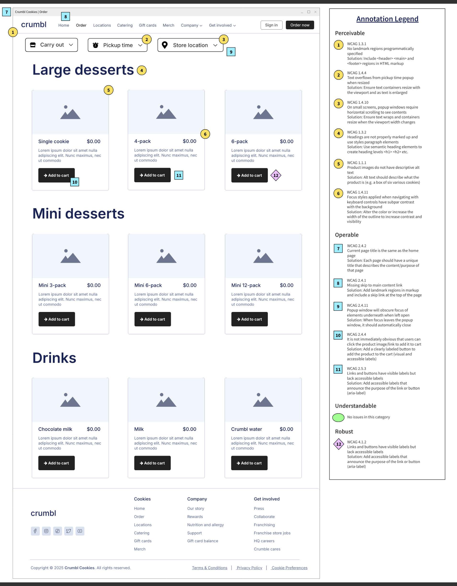

Project Overview
Objective
Develop low-fidelity wireframes that address identified accessibility issues. The project focused on annotating critical issues that, when solved, would improve usability, content clarity, and compliance with accessibility standards.
My Role
Researcher responsible for analyzing accessibility findings and creating annotated wireframes that clearly communicate problems and proposed solutions.
Tools
Balsamiq, Adobe Illustrator, accessibility audit documentation, and WCAG guidelines (POUR Principles).
Deliverables
Full-page low-fidelity wireframes, annotated with accessibility issues and a comprehensive legend detailing violations, explanations, and recommended solutions.
Process
Approach
- Accessibility Analysis: Reviewed prior audit findings to identify critical usability and accessibility issues, including WCAG violations and plain-language concerns.
- Issue Categorization: Mapped issues to accessibility principles (POUR and WCAG criteria).
- Annotation & Documentation: Applied visual annotation symbols directly to wireframes and developed a detailed legend explaining each issue and proposed fix.
- Refinement & Clarity Check: Ensured wireframes were clean, legible, and effectively communicated both problems and solutions for stakeholders.
Visuals
Project Screenshots



Results
Outcomes
- Created clear, actionable documentation linking accessibility issues to design solutions.
- Strengthened ability to translate audit findings into practical UX improvements.